Test the Web Forward
Reftest Overview
- Two files: Test file + Reference file
- Test file uses the feature under test
- Reference file is an exact visual match without using feature under test
- Self-describing (works both manually and with automation)
- Cross-browser & cross-platform
Directory structure
- CSSWG Test Repository
- test
- contributors
- yourName
- incoming
- submitted
Sample Test Case
Basic test for the transform property described in the CSS3 Transforms spec using the translate() function
Spec Links:
http://dev.w3.org/csswg/css3-transforms/#transform-property
http://dev.w3.org/csswg/css3-transforms/#two-d-transform-functions

Sample files
Test
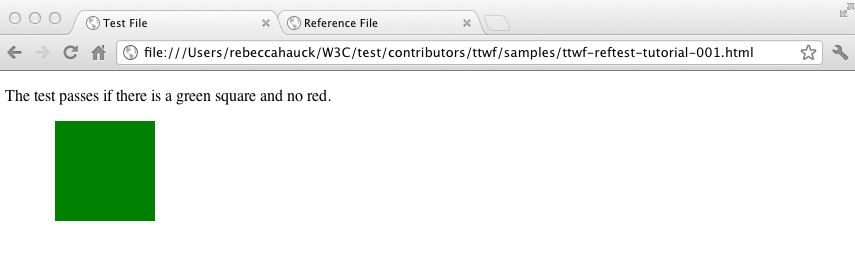Reference
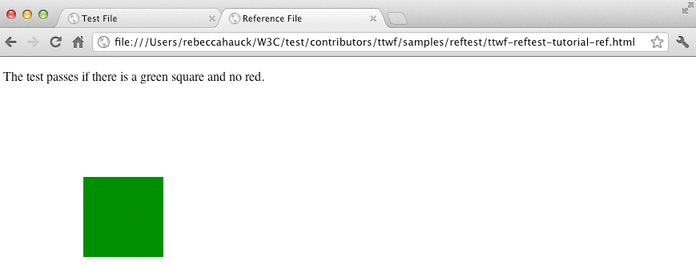Examine the code
Test File
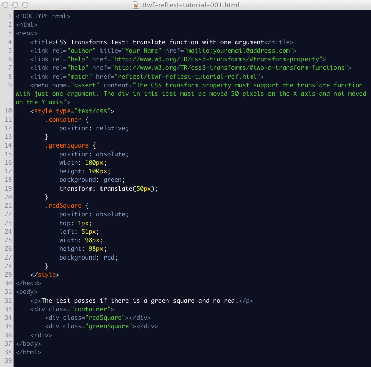Reference File
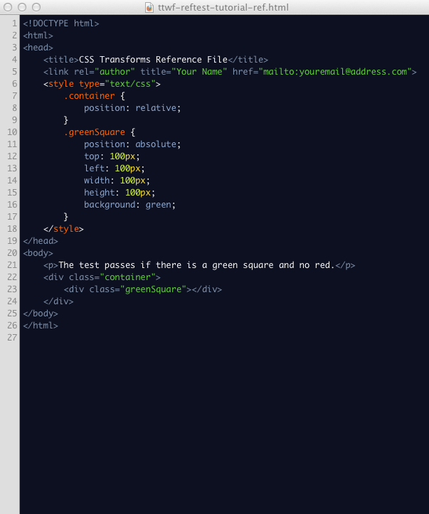Required Metadata: Title
Test Title
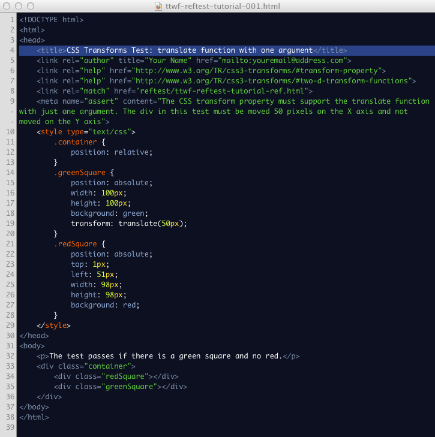Reference Title
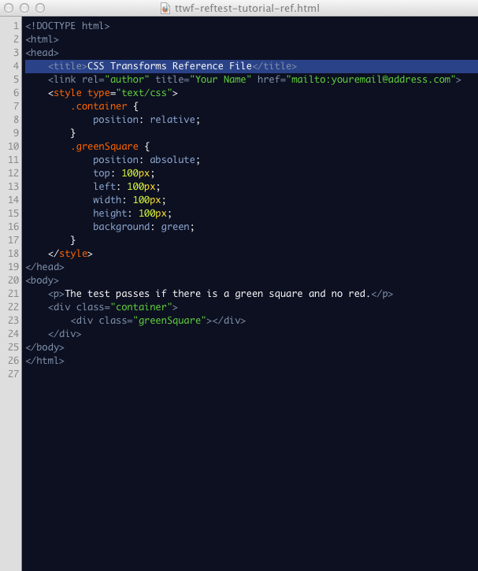Required Metadata: Author
Test Author
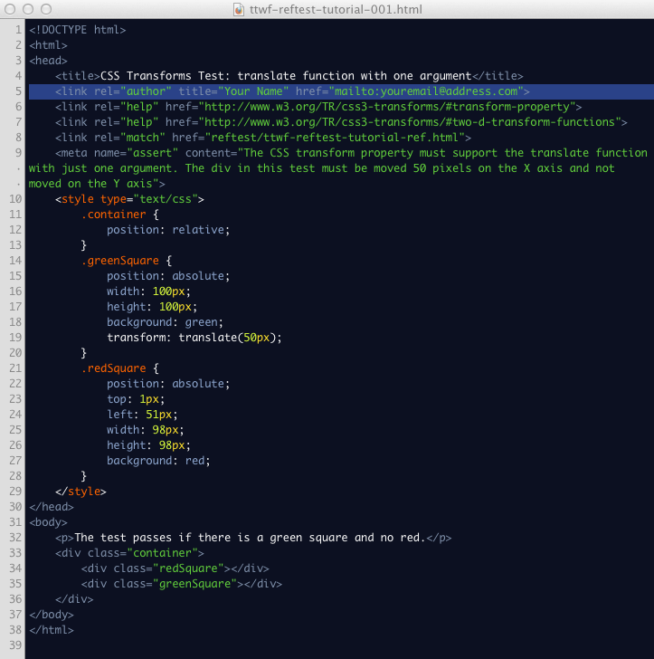Reference Author
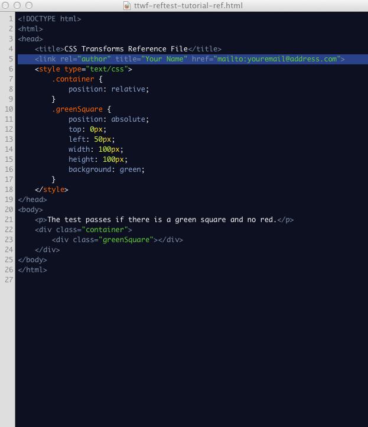Required Metadata: Spec Links
Test Spec Links
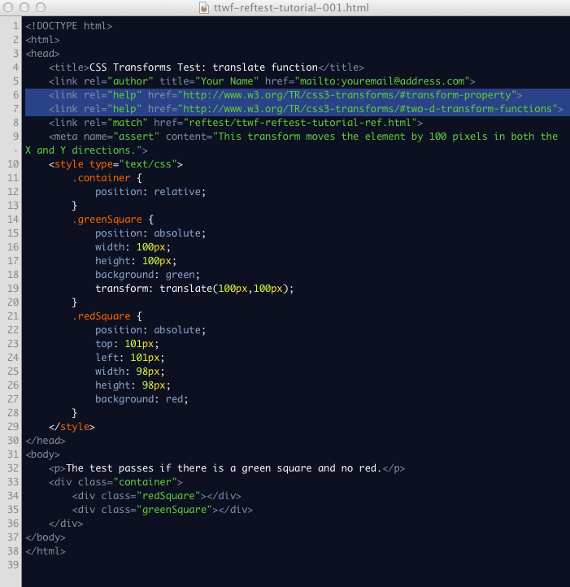Required Metadata: Reference file
Test Reference File

Required Metadata: Assertion
Test Assertion

The Test
Test element with the transform applied
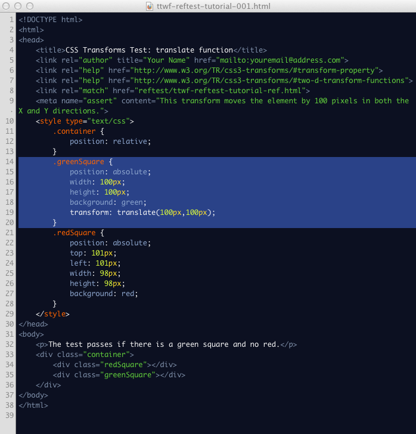Reference element
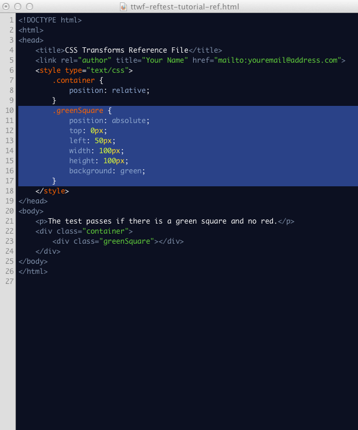Visible failure
Element is only visible when the test fails
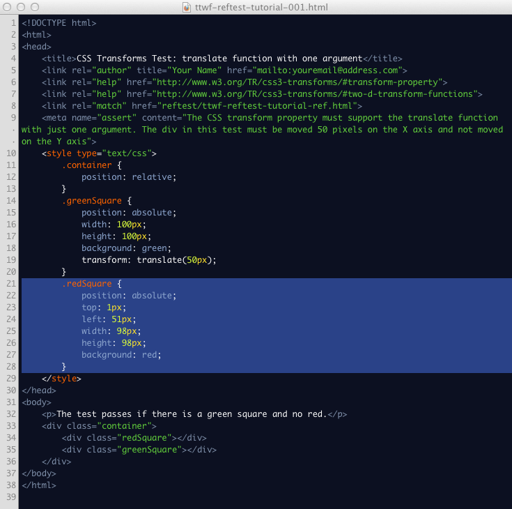Failing test example
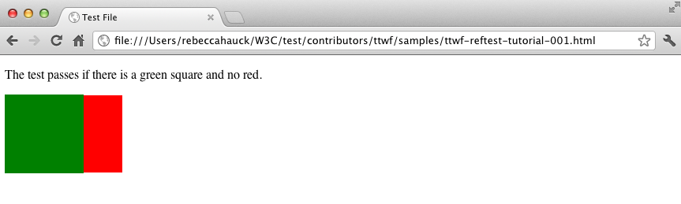Self Description
Simple statement of how the page renders when the test passes
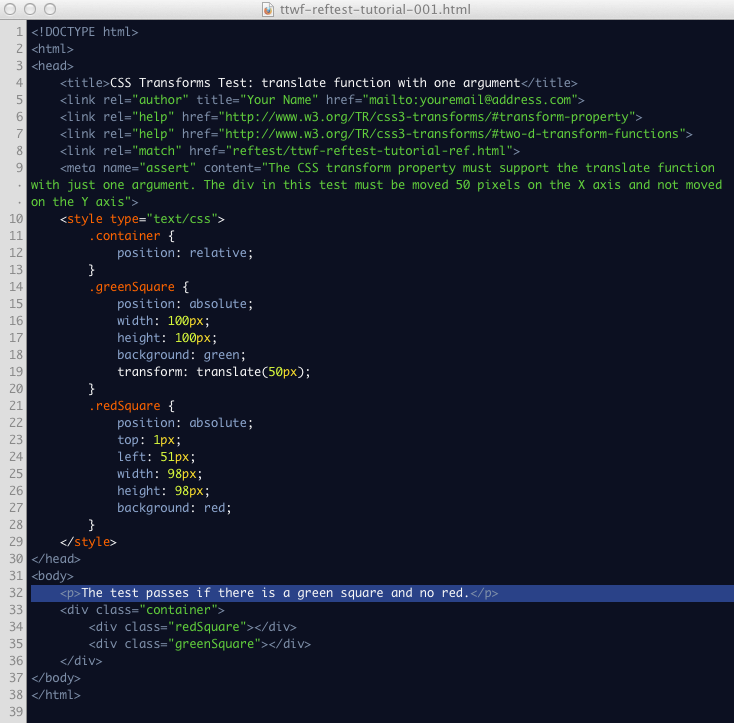Matching statement in the reference file
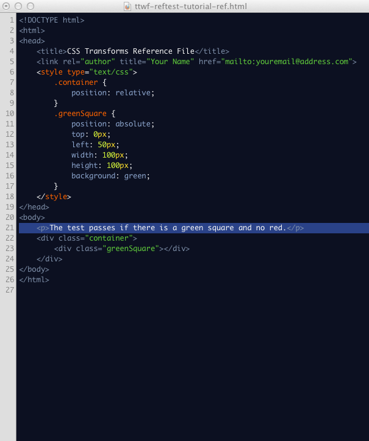Add the elements
Add the red & green elements to the test page
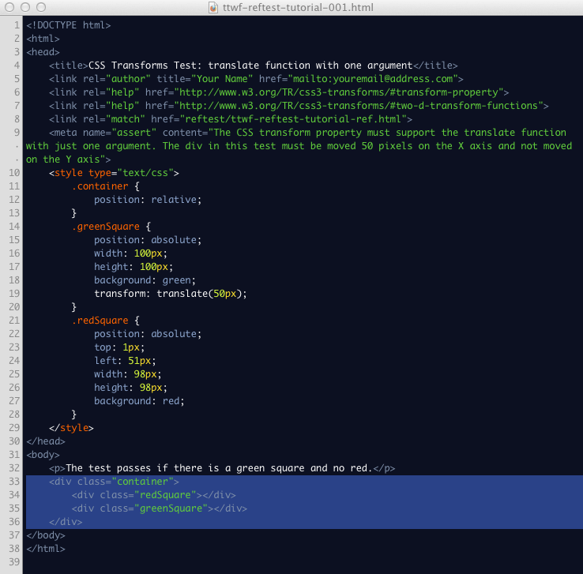Add the matching green element to the reference file
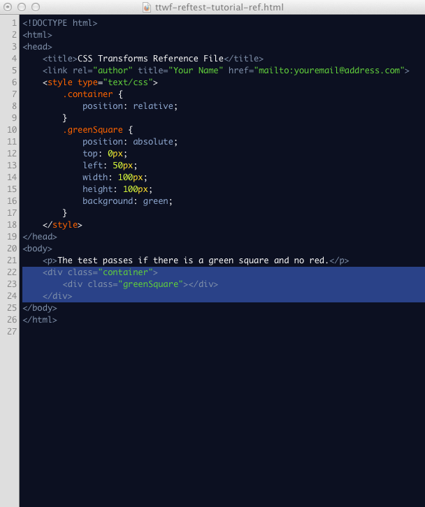JavaScript Test Overview
- JavaScript should be used when Ref Tests are not practical
- JavaScript tests have some advantages over Ref Tests
- Robust
- Flexible
- Performant
- Powerful
- Ref Tests have some advantages over JavaScript tests
- Tests verify complete rendering
- Easy to understand
- Avoids introducing additional technologies (js)
- W3C provides a framework (testharness) to simplify and standardize test creation
testharness
testharness.js and testharnessreport.js
- JavaScript framework that provides an API for making common test assertions
- Should be used by all JavaScript tests
- Path must be to /resources/... prior to pushing to the test repository
- An element must exist in test file with id="log" for test results
The test function
- Documented and implemented in testharness.js
- Function signature: test(test_function, name, properties)
- Used to define an individual test case in a file
- The function argument must be a function object, not a function call
- The return value of the function object passed to test() (argument 1) determines Pass/Fail
- The name passed to test() (argument 2) should be a descriptive test name that conveys what is being tested
- Name will be displayed in the test results table
- Properties (argument 3) is an object that overrides default test properties
- timeout is the only currently recognized property
testharness.js assert methods
- testharness.js provides a number of assert methods to use for testing
- Full list is provided in the comment section of the testharness.js file
- Whenever possible, these methods should be used
- All assert methods contain an optional "description" argument that is only output if the assertion fails
- The description will be added to the default output from testharness
- The description should be used to provide additional debug information in the case of a failure
- All asserts must be located in a test()
- asserts outside won't be detected correctly by the harness and may cause a file to stop testing
Sample Test Case
Basic test for the transform property described in the CSS3 Transforms spec using the translate() function
Spec Links:
http://dev.w3.org/csswg/css3-transforms/#transform-property
http://dev.w3.org/csswg/css3-transforms/#two-d-transform-functions
Examine the code
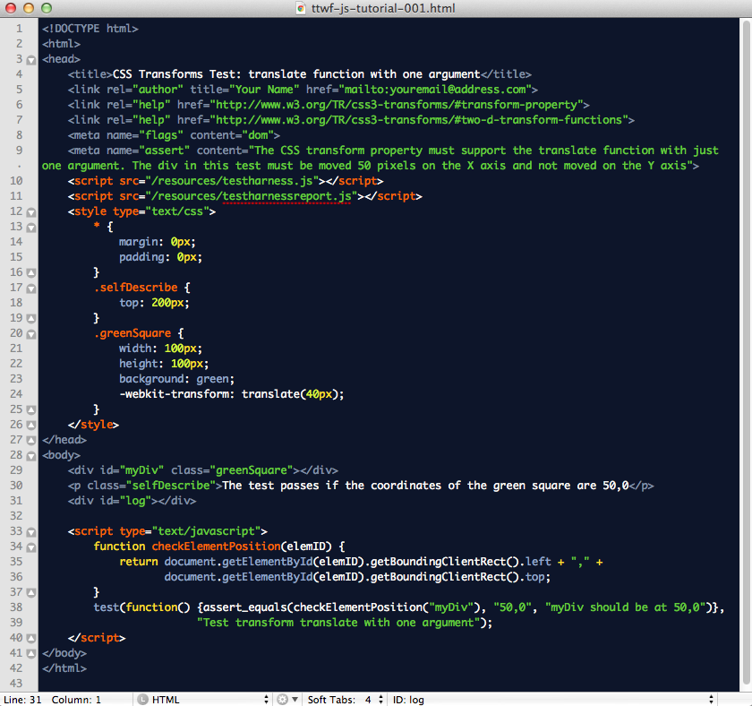Required Metadata: Flags
Flags
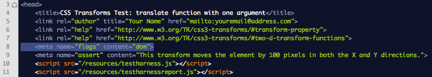Optional: CSS
Margins & Padding

Self Description
Positioned to simplify code

Test Results Container
Element with id="log"
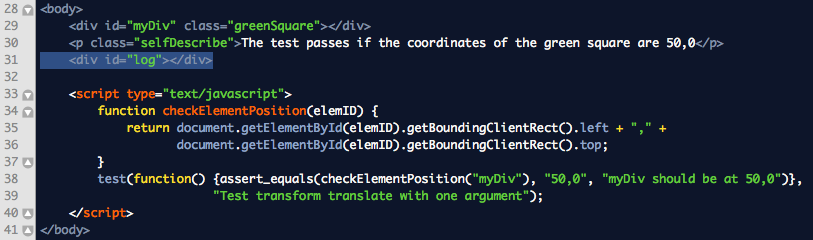User Defined Function
JavaScript Function returns actual value
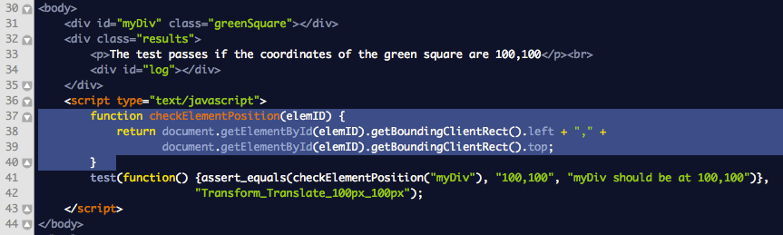Test Case
Test Function with assert_equals
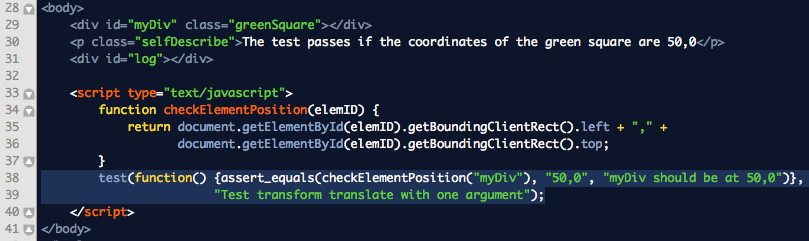- assert_equals(actual, expected, description)
- actual = checkElementPosition("myDiv")
- expected = "100,100"
- description = "myDiv should be at 100,100"
- test(test_function, name, properties)
- test_function = assert_equals(checkElementPosition("myDiv"), "100,100", "myDiv should be at 100,100")
- name = "Transform_Translate_100px_100px"
- properties = not specified
Test Results
PASS

Test Results
FAIL